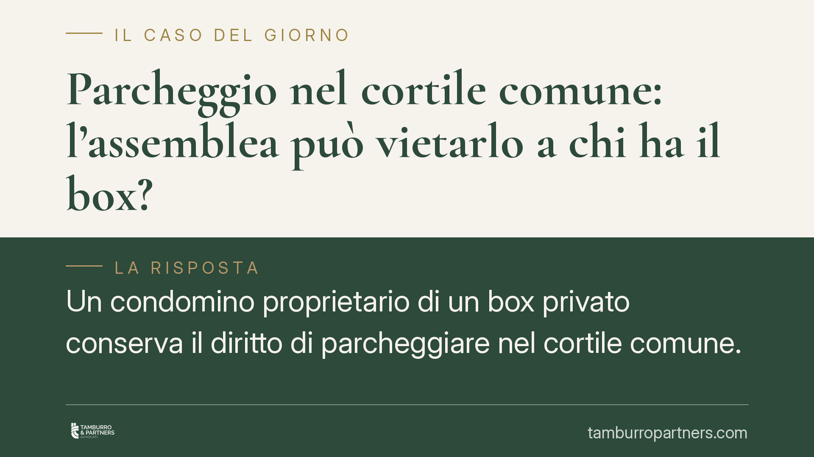

Parcheggio nel cortile comune: l'assemblea può vietarlo a chi ha il box?
Un condomino proprietario di un box privato conserva il diritto di parcheggiare nel cortile comune. L'assemblea non può escluderlo con una delibera a maggioranza: un divieto selettivo lede il pari uso della cosa comune e richiederebbe l'unanimità. Restano invece legittime le sole regole organizzative, purché applicate a tutti senza discriminazioni.

Il fatto
Il tema torna ciclicamente nelle assemblee: può la maggioranza vietare il parcheggio nel cortile comune ai soli condomini che dispongono già di un box privato? L'argomento, apparentemente logico («chi ha il garage lasci lo spazio agli altri»), si scontra con un principio preciso del diritto condominiale. La risposta è negativa: una simile esclusione selettiva non può essere imposta a maggioranza.
Inquadramento normativo
Il cortile è, salvo titolo contrario, un bene comune ai sensi dell'art. 1117 cod. civ. Ne consegue che ogni condomino ha pari diritto di goderne. La norma centrale è l'art. 1102 cod. civ., secondo cui ciascun partecipante può servirsi della cosa comune «purché non ne alteri la destinazione e non impedisca agli altri partecipanti di farne parimenti uso secondo il loro diritto».
Il concetto di *pari uso* non significa uso identico o contemporaneo, ma garanzia di un accesso equivalente al bene. Il diritto di parcheggiare nel cortile discende dalla comproprietà, non dal fatto di non avere alternative: la disponibilità di un box privato è una circostanza estranea al titolo che fonda il diritto sulla cosa comune.
Sul piano assembleare, l'art. 1136 cod. civ. disciplina quorum e maggioranze per le delibere ordinarie. Tali maggioranze consentono di regolare l'uso dei beni comuni, ma non di sopprimere o comprimere il diritto di un singolo condomino. Una delibera che vieti il parcheggio a una categoria di comproprietari incide sul contenuto del diritto di proprietà: per essere valida richiederebbe il consenso unanime di tutti gli interessati. In difetto, la delibera è impugnabile.
La giurisprudenza di legittimità (Cassazione Civile) e quella di merito (tra cui pronunce della Corte d'Appello di Milano e del Tribunale di Palermo) hanno ribadito la distinzione tra regolamentazione dell'uso — ammessa — ed esclusione dall'uso — vietata se non consentita all'unanimità.
Implicazioni pratiche
Per il condomino proprietario di box, il messaggio è chiaro: il possesso di un posto auto privato non fa decadere il diritto sul cortile comune. Una delibera che lo escluda a maggioranza è viziata e può essere contestata.
Per l'assemblea e l'amministratore, il margine di manovra esiste ma è circoscritto. Sono legittime le regole organizzative che disciplinano le modalità di uso, a condizione che siano:
- non discriminatorie, cioè applicate a tutti i condomini e non a categorie selezionate;
- finalizzate al miglior godimento comune, non alla penalizzazione di alcuni;
- rispettose della destinazione del bene.
Sono quindi ammissibili, ad esempio, la turnazione degli spazi quando i posti sono inferiori agli aventi diritto, l'assegnazione a rotazione, limiti orari uguali per tutti, il divieto di sosta prolungata o di deposito permanente del veicolo. Ciò che non è consentito è trasformare una regola di coordinamento in un'esclusione mascherata a danno di chi possiede un box.
La differenza è sottile ma decisiva: la regola organizzativa distribuisce l'uso tra tutti; il divieto selettivo lo nega ad alcuni.
Cosa fare in concreto
- Verificate il regolamento condominiale e i titoli di provenienza: controllate se esistono clausole di natura contrattuale che già disciplinano o limitano l'uso del cortile.
- Esaminate il testo esatto della delibera: distinguete se introduce una regola di turnazione valida per tutti oppure un divieto rivolto solo a chi ha il box.
- Rispettate i termini di impugnazione: le delibere annullabili vanno contestate entro trenta giorni dalla deliberazione o dalla comunicazione del verbale; non lasciate decorrere il termine.
- Proponete in assemblea una regola equa: se gli spazi sono insufficienti, suggerite una turnazione o un'assegnazione a rotazione estesa a tutti i comproprietari.
- Richiedete una valutazione preventiva prima di votare delibere che incidono sui diritti individuali, per evitare contenziosi e costi di impugnazione.
Conclusione
Il cortile resta un bene di tutti. La maggioranza può organizzarne l'uso, non riservarlo escludendo chi dispone di un box. Dove serve l'unanimità, la delibera a maggioranza non regge.
Contributo informativo a cura di Tamburro & Partners - Avv. Giuseppe Tamburro. Non costituisce parere legale.
Ogni condominio ha una storia a sé.
Se gestisci un'amministrazione e vuoi un confronto su una specifica questione condominiale, scrivi allo studio. Ti rispondiamo entro un giorno lavorativo.